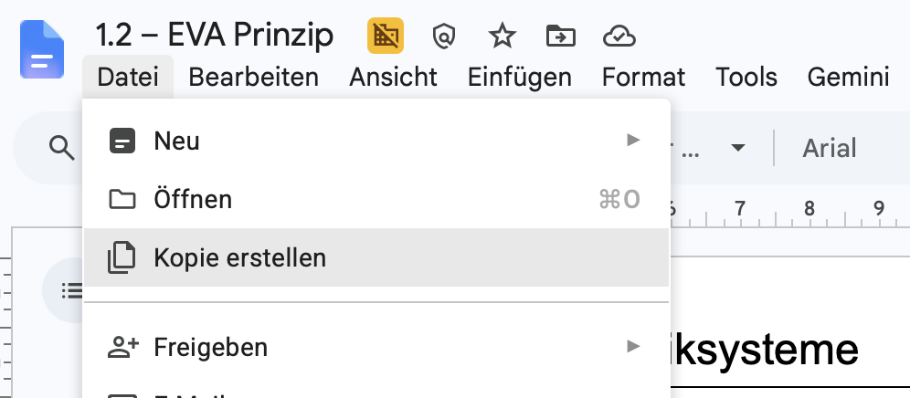
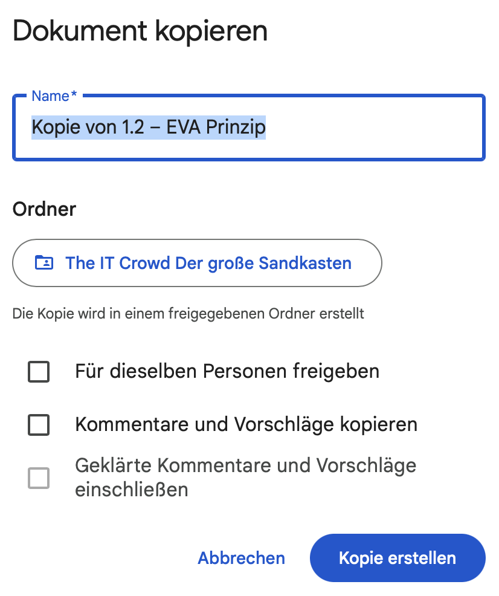
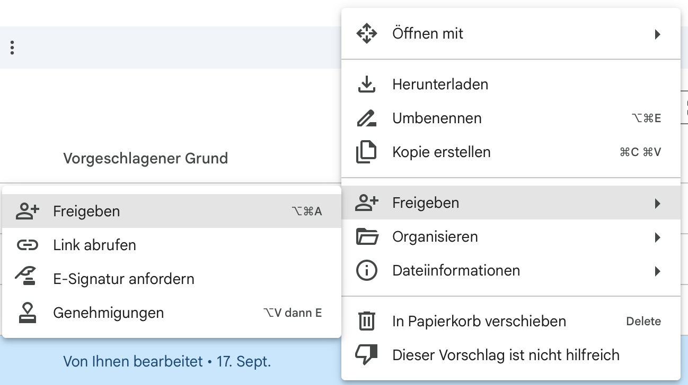

Google Docs und Drive
Eine Datei kopieren
Erstelle deine eigene Datei mit einem klaren Namen am richtigen Ort.
Eine Kopie ist eine neue, eigenständige Datei. Änderungen an der Kopie verändern das Original nicht. Spätere Änderungen am Original erscheinen auch nicht automatisch in deiner Kopie.
In Google Docs kopieren
Original öffnen
Öffne das Dokument mit dem Google-Konto, in dem deine Kopie liegen soll. Falls es dir nur als Link geschickt wurde, melde dich mit deinem Schulkonto an.
„Kopie erstellen“ wählen
Klicke oben auf Datei und dann auf Kopie erstellen.

Im Menü „Datei“ findest du „Kopie erstellen“. Name und Ordner festlegen
Ersetze „Kopie von …“ durch einen verständlichen Namen, zum Beispiel EVA-Prinzip – Mira und Ali. Klicke bei Ordner auf den angezeigten Speicherort und wähle einen passenden Ordner in Meine Ablage. Prüfe, ob du wirklich in deinem Schulkonto bist.

Ändere den Namen und wähle den Speicherort, bevor du die Kopie erstellst. Kopie erstellen und prüfen
Klicke auf Kopie erstellen. Öffne die neue Datei und prüfe oben ihren Namen. Falls im Dialog Für dieselben Personen freigeben steht, aktiviere das nur, wenn diese Personen auch Zugriff auf deine Kopie haben sollen.
Direkt in Google Drive kopieren
Datei auswählen
Öffne Google Drive, suche die Datei und klicke mit der rechten Maustaste darauf.
„Kopie erstellen“ wählen
Wähle Kopie erstellen. Google Drive legt eine neue Datei an.

Auch im Drive-Menü gibt es „Kopie erstellen“. Kopie umbenennen und verschieben
Suche die neue Datei in Drive. Klicke sie mit der rechten Maustaste an und wähle Umbenennen. Danach kannst du sie über Organisieren und Verschieben in einen passenden Ordner legen.
Weitere Informationen: Google-Drive-Hilfe zur Dateiorganisation und Classroom-Hilfe zur Abgabe.